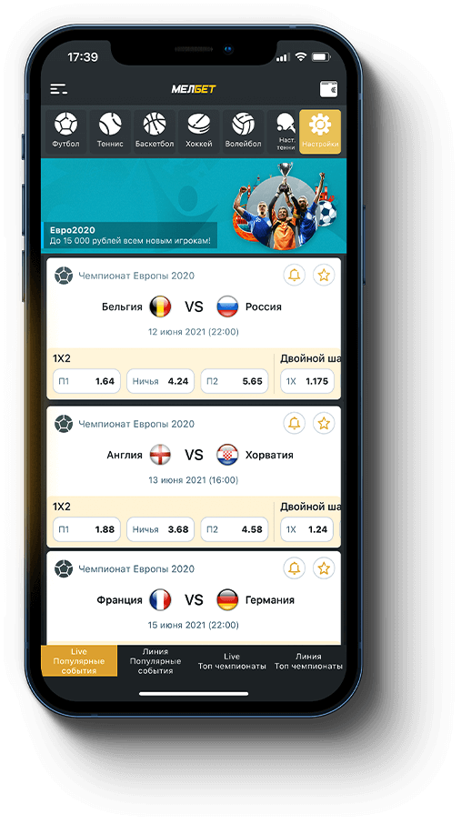
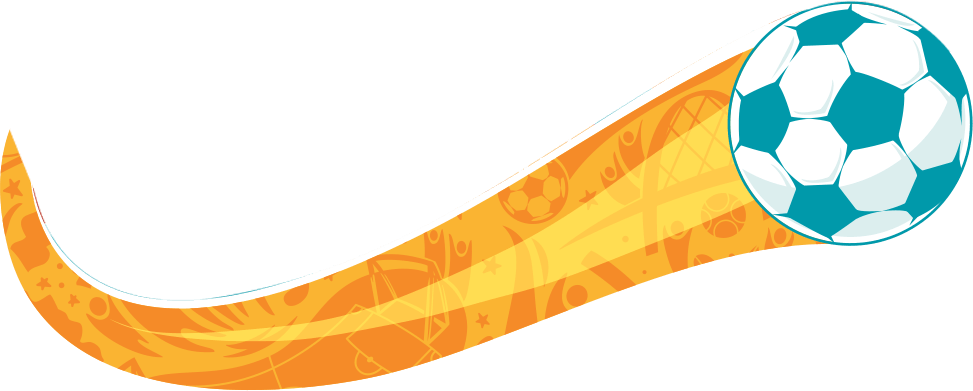

Новеньким iPhone 12 Pro Max*
*Айфон 12 Про Макс

Самое большое количество ставок
Самый большой размер выигравшей ставки
Самый большой чистый выигрыш
Самый высокий выигравший коэффициент
Самый большой проигрыш
Мелбет проводит акцию для игроков и дает им возможность получить поощрительные призы по результатам участия в акции.
Срок проведения Акции с 01.06.2021 (00:00 МСК) по 11.07.2021 (23:59 МСК).Организатор азартной игры (далее – ОАИ) - организатор Акции – общество с ограниченной ответственностью «МЕЛОФОН», осуществляющее деятельность по организации и проведению азартных игр в букмекерской конторе. Сайт ОАИ – melbet.ru (далее – сайт).
Мобильное приложение ОАИ – официальное мобильное приложение ОАИ.
Акция – акция «Евро 2021», порядок проведения которой изложен в настоящих правилах и условиях (далее –Акция).
Участник пари – физическое лицо, достигшее возраста восемнадцати лет, принимающее участие в азартной игре, и заключающее основанное на риске соглашение о выигрыше с ОАИ относительно события, в отношении которого неизвестно, наступит оно или нет. Участник акции – физическое лицо, прошедшее регистрацию, идентификацию в соответствии с действующим законодательством на сайте ОАИ или посредством Мобильного приложения ОАИ, заключившее пари с ОАИ вида «одиночная ставка» на любой исход события в период проведения Акции в рамках соревнований, проводимых в составе Чемпионата Европы по футболу UEFA EURO 2020, на сумму не менее 500 рублей и выигравшее по указанному пари, в соответствии с настоящими правилами (далее так же Игрок). Количество участников акции не ограничено. Участие в Акции является бесплатным. В случае нежелания участвовать в настоящей акции Игрок может уведомить ОАИ, направив соответствующее письменное уведомление или отказаться от участия в акции иным доступным способом. Не могут принимать участие в Акции сотрудники ОАИ, лица, иным образом имеющие отношение к организации, подготовке и проведению Акции, члены их семей. Акция направлена на проведение розыгрыша поощрительных призов среди Игроков.Поощрительные призы – 5 (пять) Apple iPhone 12 Pro Max (по одному поощрительному призу на победителя в каждой номинации). Для участия в акции Участник пари должен в период проведения акции заключить с ОАИ пари вида «одиночная ставка» на любой исход события в период проведения Акции в рамках соревнований, проводимых в составе Чемпионата Европы по футболу UEFA EURO 2020, на сумму не менее 500 рублей с коэффициентом заключенного пари не менее 2, при этом исход события, в отношении которого было заключено пари, и расчет выигрыша должны быть осуществлены до даты окончания проведения Акции, то есть до 23 часов 59 минут 11.07.2021 по МСК, а коэффициент выигрыша не должен быть пересчитан до значения «1», пари не должно быть отменено. К отмененным пари относятся также проданные игроком пари.Победителями розыгрыша могут стать 5 игроков, каждый из которых должен быть победителем только в одной из указанных ниже номинаций:1. Самый большой размер проигравшей ставки. 2. Самое большое количество ставок, совершенных в рамках участия в Акции. 3. Самый высокий коэффициент у выигравшей ставки. 4. Самый большой размер выигравшей ставки. 5. Самый большой размер чистого выигрыша по ставке.
Определение победителей происходит путем ранжирования результатов Игроков.. После ранжирования в каждой номинации победителями признаются игроки, занимающие высшие позиции в соответствующих номинациях.
Определение победителя в номинации «Самый большой размер проигравшей ставки» осуществляется с учетом следующего: Размеры ставок по сделанным Игроком в период Акции пари не суммируются. Количество пари, которые могут быть заключены с участником акции, не ограниченно. При равенстве размеров ставок у нескольких Игроков приоритет в распределении поощрительных призов отдается тому Игроку, у которого коэффициент одиночной ставки по проигранному пари, предусмотренному настоящими правилами, был больше.
Определение победителя в номинации «Самое большое количество ставок, совершенных в рамках участия в Акции» осуществляется с учетом следующего: Количество пари, которые могут быть заключены с участником акции, не ограниченно.При равенстве количества ставок у нескольких Игроков приоритет в распределении поощрительных призов отдается тому Игроку, у которого проигрыш по всем пари, соответствующим критериям настоящих правил, был больше.
Определение победителя в номинации «Самый высокий коэффициент у выигравшей ставки» осуществляется с учетом следующего:Сумма коэффициентов по сделанным Игроком в период проведения Акции пари не суммируется. Среди пари, сделанных Игроком в период проведениях акции и соответствующих требованиям, установленным настоящими правилами, ОАИ выбирает одно пари, коэффициент выигрыша в котором был наибольшим.При равенстве коэффициентов у нескольких Игроков приоритет в распределении поощрительных призов отдается тому Игроку, у которого размер одиночной ставки по выигрышному пари, предусмотренному настоящими правилами, был больше.
Определение победителя в номинации «Самый большой размер выигравшей ставки» осуществляется с учетом следующего: Размеры ставок по сделанным Игроком в период Акции пари не суммируются. Количество пари, которые могут быть заключены с участником акции, не ограниченно.При равенстве размеров ставок у нескольких Игроков приоритет в распределении поощрительных призов отдается тому Игроку, у которого коэффициент одиночной ставки по проигранному пари, предусмотренному настоящими правилами, был больше.
Определение победителя в номинации «Самый большой размер чистого выигрыша по ставке» осуществляется с учетом следующего:Чистый выигрыш рассчитывается как разница между суммой выигрыша Игрока и суммой ставки. Размеры суммы чистых выигрышей по сделанным Игроком в период Акции пари не суммируются. Количество пари, которые могут быть заключены с участником акции, не ограниченно. При равенстве размеров чистых выигрышей у нескольких Игроков приоритет в распределении поощрительных призов отдается тому Игроку, у которого коэффициент одиночной ставки по проигранному пари, предусмотренному настоящими правилами, был больше.
Подведение итогов розыгрыша осуществляется до 23 часов 59 минут 16.07.2021 по МСК.
После определения победителей розыгрыша поощрительных призов ОАИ связывается с победителями для уточнения способов и сроков получения поощрительных призов по контактным данным, указанными участником азартной игры при регистрации. В случае невозможности отправки приза определившемуся победителю ввиду его недобросовестного поведения при проведении Акции, а также в случае, когда ОАИ не может связаться с победителем по предоставленным при регистрации данным в течение 2 календарных дней, ОАИ имеет право отказать во вручении приза и передать приз иному участнику акции, соответствующему условиям ее проведения.
Результаты проведения акции будут опубликованы на официальной странице ОАИ в социальной сети Инстаграм, а также на официальном сайте ОАИ в сети Интернет – melbet.ru.
В соответствии с требованиями законодательства Российской Федерации ОАИ берет на себя обязанности налогового агента по выплате НДФЛ за победителей, указанных в настоящих правилах. ОАИ выполнит свои обязательства по перечислению необходимой суммы налога со стоимости призов, получаемых победителями в натуральной форме, за счет денежной части поощрительных призов. ОАИ уведомляет победителей о том, что налоговая ставка в отношении стоимости любых выигрышей и призов, получаемых в результате участия в проводимой акции, в части превышения размеров, указанных в п. 28 ст. 217 Налогового кодекса РФ (4000 рублей), устанавливается в размере 35% от стоимости поощрительного приза. Уплата указанного налога происходит с учетом требований п. 2 ст. 224, п. 1, 4 и 5, ст. 226 Налогового кодекса РФ.
Правила Акции распространяют свое действие только на Участников акции, участие в Акции является подтверждением ознакомления и согласия Участника акции с настоящими правилами и условиями, участие в Акции является добровольным.Предложение действительно только для одного счета, одного физического лица, адреса, ip-адреса, одного аккаунта.
В данном предложении учитываются только ставки за собственные средства. Не учитываются бонусные ставки, ставки на промокод и т.д.Если в настоящих правилах проведения акции не оговорены иные условия, к пари, сделанным в рамках акции, применяются общие условия и положения Правил приема ставок и выплаты выигрышей и правилах ОАИ, опубликованных на сайте ОАИ (https://melbet.ru/information/rules/).ОАИ имеет право аннулировать предложение при обнаружении признаков мошенничества или злоупотреблением Участником акции условиями Акции. Предложение также может быть аннулировано по инициативе ОАИ без объяснения причин. В случае обнаружения указанных фактов Игрок исключается из участия в Акции. ОАИ оставляет за собой право вносить изменения или дополнения в условия Акции с опубликованием на сайте ОАИ. Надлежащим уведомлением об изменении и/или дополнении Правил является информация, размещённая на сайте. Точные технические и внешние характеристики поощрительных призов определяются исключительно по усмотрению ОАИ. При возникновении разногласий или спорных ситуаций, касающихся Акции, ОАИ принимает окончательное решение по факту спорных ситуаций или разногласий, такое решение является окончательным для Участников акции. При выявлении расхождений настоящих Правил и рекламных материалов, распространяемых в рамках данной Акции, применяются настоящие Правила.Приняв участие в Акции, Участники акции соглашаются с тем, что добровольно предоставленная ими для целей проведения Акции информация (в том числе их персональные данные) может обрабатываться как ОАИ, а также уполномоченными им лицами, в том числе с применением автоматизированных средств обработки данных в целях, указанных ст. 3 федерального закона № 152-ФЗ «О защите персональных данных».